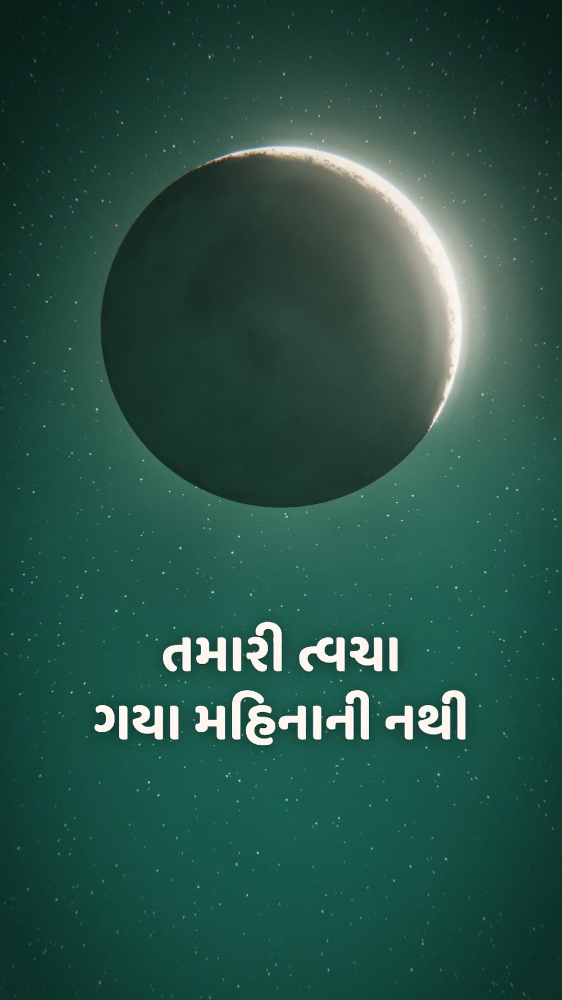
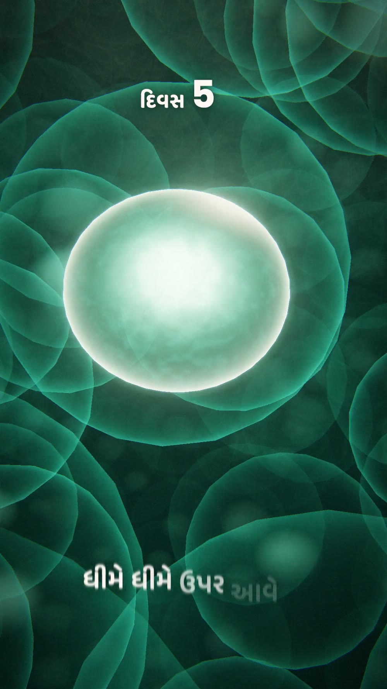
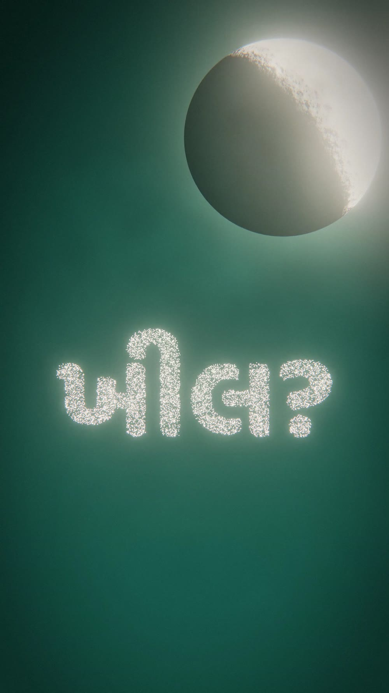
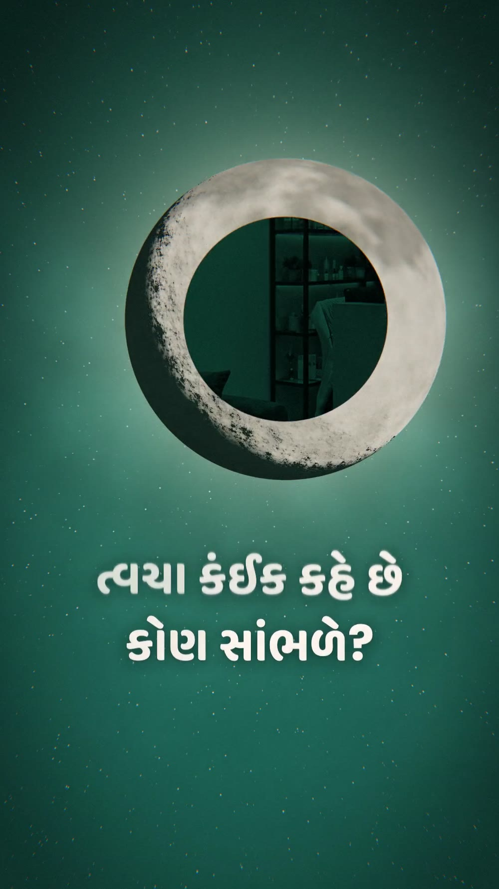
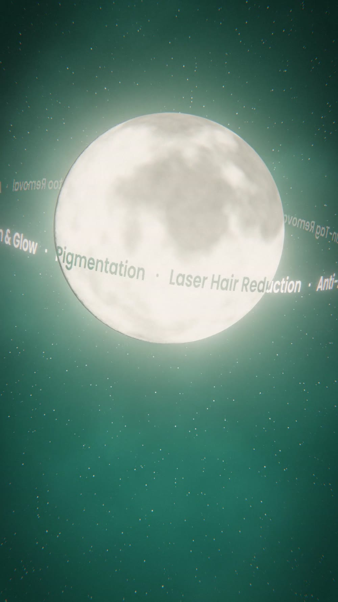
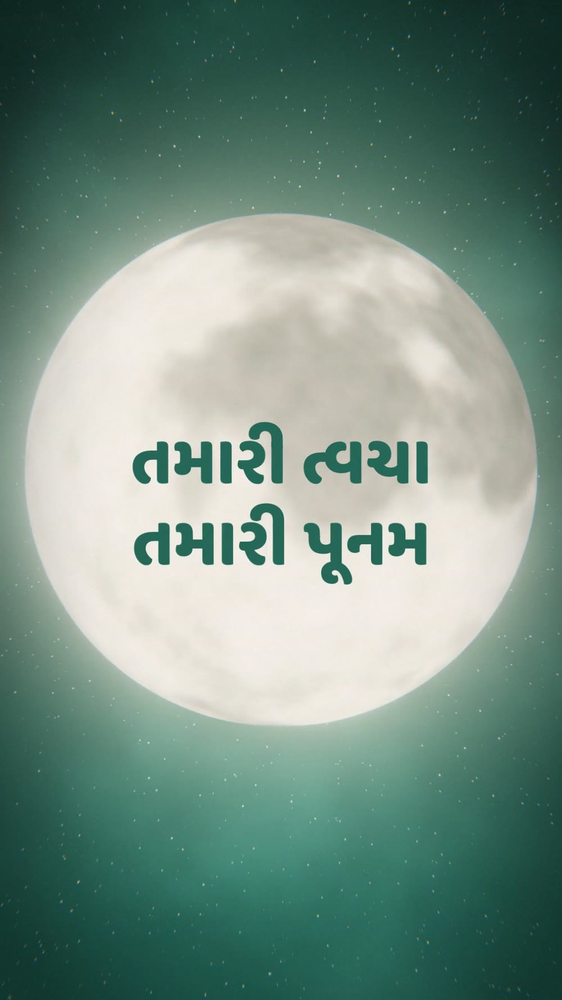

Tap play for sound. 9:16 Reel, 62 s, in Gujarati and English. Web copy at 720p; the original is 1080p.
What I tried
Bang Motion is a skill with rules that make an AI agent build motion graphics that move like video, not like slides. I used it to make an introduction film for Cresence Skin, a clinic in Surat.
- The idea: young adult skin renews in about 28 days and the moon takes about 29, so the film goes from Amas to Poonam.
- The moon's light becomes one cell. It divides, rises through the skin while a counter runs from day 1 to 28, then breaks the surface and turns into stars.
- The moon opens like a window into the clinic. Its lights come on one by one, each on a music note.
- Moon, cells and stars are 3D made by code. The only photos are the clinic and the doctor.
- The music is made by code too, with no samples. It starts in raga Chandrakauns, a night raga, and opens into a major key with the lights.
Wide version, 16:9
Stills





